01
Vyberete si výlet
Zvolíte si, jak často má pes jezdit – 2x týdně, 3x týdně, nebo jen jednorázově – a kam. Všechno zvládnete přes náš rezervační systém přímo na webu.

Svážíme brněnské psy na celodenní výlety do lesa, protože si zaslouží se pořádně vyřádit! Ve smečkách max. šesti pejsků, s jedním zkušeným vodičem, si můžou pořádně proběhnout packy, čmuchat, kam je nos táhne, a být prostě zase na chvíli sami sebou.
Chápeme, že svěřit psa cizím lidem na celý den chce trochu odvahy. Proto vám přesně popíšeme, co se bude dít – od chvíle, kdy nám psa poprvé předáte, až po fotku z lesa, která vám večer přistane v mailu. Kromě toho svého psa můžete celý den sledovat přes GPS obojek a taky skrze videoreporty, které posíláme minimálně každou 1 hodinu.
Zvolíte si, jak často má pes jezdit – 2x týdně, 3x týdně, nebo jen jednorázově – a kam. Všechno zvládnete přes náš rezervační systém přímo na webu.
Krátký telefonát, kde se zeptáme na to podstatné – jaký je váš pes povahou, jak vychází s ostatními psy, jestli má nějaké zvláštnosti nebo na co si dát pozor. Nadále budeme řešit věk a fyzickou zdatnost.
Ráno vyzvedneme psa kdekoli v Brně a okolí – nezáleží nám na tom, kde bydlíte. Na základě telefonátu pro psa zvolíme buď přepravní kennelku nebo jej zapášeme do auta pomocí speciálního postroje.
Vyrážíme do lesa i k vodě – psi si smí zaplavat, čmuchat a pořádně se proběhnout. Na cestě jsou vždy v bezpečí na stopovačce, doopravdy na volno je pouštíme jen v uzavřených výbězích, kde si můžou běhat bez vodítka a bez rizika. Každý pes má navíc GPS obojek, takže víme, kde přesně je (a vy taky!), po celou dobu výletu.
Během dne vám pošleme pár fotek přímo z lesa a mapku se skutečnou trasou, kterou pes ušel – obvykle 6 až 10 kilometrů podle lokality a počasí a výkonosti skupinky.
Večer psa přivezeme zpátky – unaveného, spokojeného a trochu jiného, než jsme ho ráno vyzvedli (les je zkrátka les). Než ho předáme, tak pejska základně ho očistíme (v případě plemen se specifickou srstí je samozřejmě možnost se domluvit o komplexnější servis), ať vám doma nezůstane celý lesní den na koberci.
Chodíme tam, kde mají psi prostor běžet, čichat a bezpečně poznávat svět. Trasy volíme podle počasí, velikosti smečky a nálady jednotlivých psů.
Ideální pro testovací den nebo když chcete službu jen vyzkoušet.
Fixní dny, výměna po domluvě.
Fixní dny, výměna po domluvě.
Oba balíčky začínají vstupním testovacím dnem – ten se platí zvlášť jako jednorázová exkurze.
Ať víte, komu psa svěřujete
Přepravní dodávka i bezpečnostní boxy jsou schválené Krajskou veterinární správou Jihomoravského kraje.
Kryje případ, kdy by se něco stalo vašemu psovi, nebo kdyby přes něj došlo ke škodě třetí straně.
Od založení Brněnské psiny se nestal jediný vážnější incident na svozu ani na výletě. Chceme, aby to tak zůstalo, proto přijímáme méně psů, než bychom mohli. Před výjezdem si u každého pejska ověřujeme očkovací průkaz. Přímá spolupráce s ALBA VET a ABC clinic nám umožňuje 24/7 kliniku kontaktovat a dává nám nárok na priorití přijetí v případě jakýchkoli problémů.
Žádný pejsek s námi nemůže vyrazit bez toho, abychom si nejprve promluvili s vámi a strávili s ním celý testovací den v terénu - půldenní zážitek pro pejska, ve kterém se seznámíme s ním i jeho povahou.
Řekněte nám o svém psovi a co byste chtěli vyzkoušet – ozveme se do 24 hodin a společně domluvíme termín, i mimo aktuálně otevřené sloty.
Testovací den je vždy první krok, bez ohledu na zvolený balíček. Balíček i lokalitu můžete po testovacím dni ještě upravit.
Napište nám
Začněte vstupním testovacím dnem – uvidíte sami, jak vypadá pořádně unavený a spokojený pes.
Rezervovat